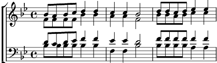

N'kosi sikelel'i Afrika
Sib majeur
Paroles: Enooh Sontonga

Nkosi Sikelel' iAfrika
Maluphakanyisw’ uphondo lwayo
Yiva imathandazo yethu
Nkosi Sikelela Nkosi Sikelela
Yiza moya, yiza yiza
Yiza moya, yiza yiza
Yiza moya, sus serondaya Jesus serondaja
Hindo mbepo, Hindo mbepo,
Hindo mbepo, Hindo mbepo
Jesus serondaja, Jesus serondaja